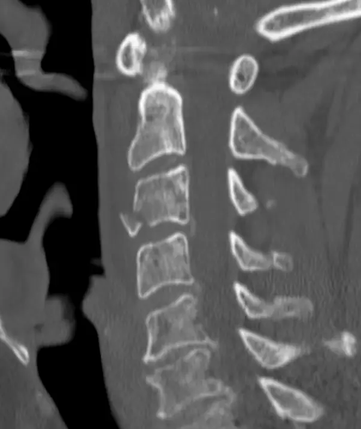
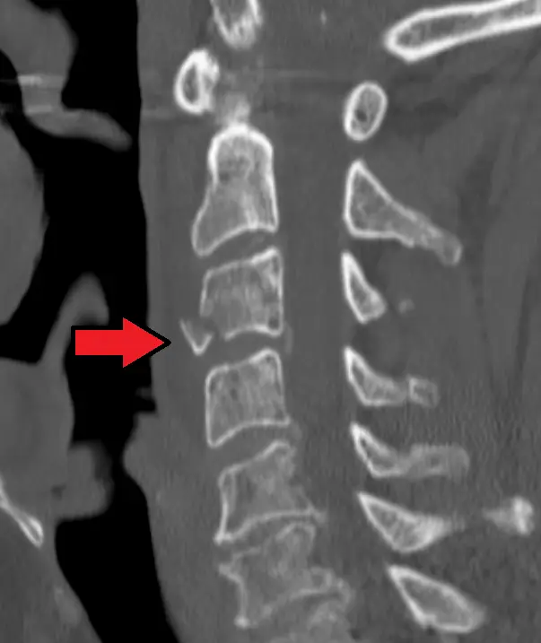

Fracture tear-drop cervicale
DX.7 — Fracture tear-drop cervicale — 🚩 même bande E, sans ordre de létalité lu
1. Définition
La revue EFORT (European Federation of National Associations of Orthopaedics and Traumatology) Open Reviews définit en 2025 la fracture tear-drop par un fragment triangulaire antéro-inférieur.efort-abs
Ce fragment siège au coin antéro-inférieur du corps vertébral, et la forme en flexion résulte d’une compression associée à une flexion.efort-abs
Dans la définition de la forme en flexion, le recul du corps vers le canal a sa place.efort-abs
2. Épidémiologie (Suisse, puis Europe)
Les accidents de voiture dominent les fractures cervicales et en expliquent jusqu’à 48 % des cas.efort-epi
Les chutes représentent 21 % des fractures cervicales réunies dans la synthèse européenne.efort-epi
Les lésions de sport comptent 14 % dans la même synthèse, avec un mécanisme souvent à haute énergie.efort-epi
Chez le polytraumatisé, une atteinte du rachis cervical est présente dans jusqu’à 3,7 % des cas, ce qui impose de la chercher.efort-epi
Le rachis cervical sous-axial rassemble 65 % des fractures cervicales, car ce segment est mobile au-dessus du thorax rigide.efort-epi
Ce même segment concentre plus de 75 % des luxations de tous les étages, selon les chiffres retenus par la revue.efort-epi
La forme en flexion touche surtout le corps de C5 (cinquième vertèbre cervicale), dans jusqu’à 74 % des séries réunies.efort-loc
Vient ensuite le corps de C4 (quatrième vertèbre cervicale) avec 16 %, et C6 (sixième vertèbre cervicale) reste à 10 %.efort-loc
Ces fractures représentent 8 à 23 % des lésions par flexion-compression, ce qui les distingue des simples tassements.efort-loc
Dans plus de 50 % des grandes cohortes citées, le recul du fragment postéro-inférieur s’accompagne d’un déficit.efort-loc
La plus grande série de flexion réunie dans la revue compte 54 patients, et chaque pourcentage reste fragile.efort-korres
Les séries sous-axiales dépassent rarement 15 patients, ce qui explique la prudence des indications opératoires.efort-ext
Les premières descriptions datent de plus de 70 ans, et la revue rappelle que la lésion reste peu publiée.efort-ext
En comparaison, la Revue médicale suisse de 2021 juge l’incidence cervicale après traumatisme fermé relativement faible.rms2021
Cette incidence américaine citée par la revue est de 40 cas par million et par an, avec une prévalence de 0,4 à 0,6 %.rms2021
3. Physiopathologie
Passé le simple tassement, l’énergie de flexion-compression détache le fragment antérieur par un trait coronal.
Le premier stade écrase le corps en coin, puis le deuxième stade augmente la perte de hauteur et crée une cyphose locale.efort-allen
À ce stade précoce, le ligament longitudinal postérieur reste continu, sans fragment reculé dans le canal.efort-allen
L’énergie suivante détache le triangle antérieur, et le quatrième stade ajoute un recul du corps inférieur à 3 mm.efort-allen
Le cinquième stade ajoute une rupture discale, une cyphose et un rétrécissement plus net du canal.efort-allen
Ce mécanisme se voit dans les accidents de voiture, certains sports et le plongeon en eau peu profonde.efort-allen
La classification AO (Arbeitsgemeinschaft für Osteosynthesefragen) Spine range la forme en flexion en type C, car le corps est translaté.efort-ao
La forme en extension est rangée en type A1 (compression d’un seul plateau), puisqu’elle ne concerne en général qu’un seul plateau.efort-ao
Issu de C3 (troisième vertèbre cervicale) à C5, le nerf phrénique est celui du diaphragme du blessé.rms2014
Une lésion à hauteur du phrénique ou au-dessus peut supprimer la ventilation spontanée.rms2014
Le schéma de Bruce Blausen montre la moelle en couleur, et le repère 1 siège sur la moelle cervicale haute.img-moelle
Le repère 2 est sur la moelle thoracique, et le repère 3 est sur la moelle thoraco-lombaire.img-moelle
Avant même un déficit moteur complet, le fragment qui recule réduit le diamètre du canal et guide l’imagerie.


| Perturbation | Exploration qui la montre | Conduite liée au mécanisme |
| Triangle antérieur détaché | Coupe sagittale qui isole le fragment | On ne conclut pas à une avulsion stable |
| Recul du corps inférieur à 3 mm | Mesure du décalage sur la coupeefort-allen | On cherche déjà la rupture ligamentaire |
| Translation franche du corps | Lecture du type Cefort-ao | La stabilisation chirurgicale est discutée d’emblée |
| Atteinte du foramen transversaire | Angio-imagerie par résonance magnétiquerms2002 | On cherche une lésion de l’artère vertébrale |
4. Démarche diagnostique
Après 24 heures, une lésion médullaire complète garde le mauvais pronostic décrit en 2005.rms2005-init
Environ 3 % seulement des lésions complètes d’emblée récupèrent pendant les 24 premières heures, ce qui change l’urgence relative.rms2005-init
La tear-drop en flexion et l’avulsion en extension de l’axis ne partagent pas la même stabilité.
L’avulsion en extension représente 3 à 13 % des traumatismes cervicaux, et elle peut rester non opératoire.efort-ext
Au-delà de 43 % de la hauteur du corps ou de 5 mm de déplacement, le risque de pseudarthrose de l’avulsion augmente.efort-ext
Luxation facettaire et tear-drop partagent la même bande de gravité, sans ordre de létalité lu.
La revue suisse de 2005 rassemble la tear-drop, le burst et la luxation facettaire parmi les lésions basses instables.rms2005-cx
Traiter comme stable un triangle antérieur déjà accompagné d’un recul du corps constitue le piège principal.
Moins de 3 mm, sans trait sagittal postérieur ni recul, définissent le type I de Korres, qui peut rester conservateur.efort-korres
Au-delà de 3 mm, le type II ajoute un trait sagittal, sans recul, et le déficit y reste moins fréquent.efort-korres
| Diagnostic qui concurrence | Signe qui tranche | Piège | Conduite si le signe est présent |
| Avulsion en extension de l’axis | Fragment antérieur de C2 (deuxième vertèbre cervicale) sans translationefort-ext | Croire toute tear-drop instable | Collier si les seuils de 43 % et de 5 mm sont respectésefort-ext |
| Burst cervical | Mur postérieur rompu sans triangle en larmerms2005-cx | Confondre les deux instabilités | Fixation le plus souvent, selon la revue suisse |
| Luxation facettaire | Facette perchée ou verrouilléerms2005-cx | Réduire sans examen neurologique répété | Réduction prudente, urgence relative |
| Lésion médullaire complète | Niveau qui ne récupère pas après 24 heuresrms2005-init | Promettre une récupération | Protéger la ventilation et ne pas donner de corticoïde à haute dose |
Le dossier reçoit le mécanisme exact, pour distinguer un recul d’une simple avulsion.
Le cliché est comparé au schéma de Korres avant tout propos sur la stabilité du fragment.
Un triangle vu seulement de face ne rassure pas tant que la coupe sagittale reste non lue.
Une douleur musculaire du cou se sépare d’un niveau sensitif, qui impose l’immobilisation immédiate.
L’équipe est prévenue que la voie d’abord dépend du recul et de la facette.
Le patient reste à plat tant que l’alignement n’est pas tenu, pendant tout le brancardage.
L’examen est répété après chaque mobilisation, et c’est le changement qui dicte l’urgence.
La famille entend que la série publiée est petite et que le pronostic individuel n’est pas un pourcentage certain.
Un autre étage du rachis est examiné, le choc du cou pouvant aussi atteindre le thorax.
Vomissements et céphalée sont notés avant toute morphine, le crâne pouvant être en cause.
Oxygène et monitorage sont prêts avant le transfert vers le scanner, la ventilation pouvant chuter en route.
L’identité et l’heure du traumatisme sont confirmées sur le bracelet avant le délai opératoire.
5. Anamnèse ciblée et drapeaux rouges
L’anamnèse commence par le vecteur : plongeon, accident de voiture ou chute ne se lisent pas de la même façon.
La question porte sur un choc du fond ou du volant, mécanisme de flexion-compression du fragment antérieur.efort-allen
L’heure du choc est datée, avec la question d’un déficit complet dès la première minute.
Un déficit complet qui persiste au-delà des 24 premières heures assombrit le pronostic, selon la revue suisse de 2005.rms2005-init
Une aggravation secondaire est recherchée et reste distincte d’un déficit déjà fixé.
Un déficit neurologique progressif avec compression est une indication absolue de la revue de 2005.rms2005-ind
On relève les anticoagulants et les antiagrégants, afin de préparer une éventuelle fixation sans inventer ici un délai d’arrêt.
Un traumatisme crânien associé fait suspecter le cou, les deux atteintes étant liées dans la revue de 2005.rms2005-init
La douleur médiane, l’irradiation dans un dermatome et la rétention d’urines se demandent séparément, pour ne pas mêler moelle et racine.
Chez la personne intoxiquée ou inconsciente, l’immobilisation se maintient jusqu’à un examen exploitable.hug
| Drapeau rouge | Signification | Action immédiate |
| Déficit moteur qui s’étend | Compression encore évolutiverms2005-ind | Immobiliser et traiter comme une indication absolue de la revue |
| Fréquence respiratoire inférieure à 10 ou supérieure à 30 | Menace vitale du protocole genevoishug | Traiter la respiration avant de perfectionner le collier |
| Pouls supérieur à 120 ou pouls radial absent | Choc possible, y compris vasoplégie hautehug | Remplir et chercher une autre hémorragie |
| Plongeon en eau peu profonde | Flexion-compression compatible avec la tear-dropefort-allen | Coupes du rachis cervical sous-axial |
Les seuils préhospitaliers s’ouvrent dans la fenêtre des menaces vitales avant le choix du collier.
Version 1,4 du protocole des Hôpitaux universitaires de Genève (HUG), les menaces vitales immédiates y sont énumérées.hug
La compromission des voies aériennes vient en tête, et l’oxygénation prime sur la position de la tête.hug
Une fréquence respiratoire inférieure à 10 ou supérieure à 30 impose de traiter la ventilation avant l’imagerie.hug
Un pouls supérieur à 120, un pouls radial absent ou l’absence de réponse motrice comptent aussi comme menaces immédiates.hug
L’immobilisation ne doit pas retarder un geste qui sauve la vie ni le transport vers un centre capable.hug
Pendant l’intubation, le maintien manuel de la tête devrait limiter le déplacement du segment lésé.hug
Fermer6. Examen physique ciblé, région par région
L’examen suit l’ordre réel du blessé : voies aériennes, ventilation, cou, puis moelle, thorax et abdomen.
La parole et la respiration sont observées en premier, le diaphragme dépendant des racines cervicales hautes.
Une lésion au niveau du phrénique ou au-dessus peut supprimer la ventilation, et ce fait oriente le monitorage.rms2014
Le cou se lit dans la fenêtre du cou, le thorax dans la fenêtre thoracique, et le membre dans la fenêtre des membres.
L’abdomen se lit dans la fenêtre abdominale, une flexion violente pouvant associer une lésion viscérale.
L’attitude de la tête est observée avant la palpation, pour éviter une réduction involontaire.
La palpation cherche une douleur médiane et un écart interépineux, signe possible de rupture postérieure.
Aucune flexion active n’est demandée au blessé suspect quand la lésion est déjà très instable.
Les auteurs réservent les clichés dynamiques, car la manœuvre peut aggraver une tear-drop déjà translatée.efort-im
Un roulis de 20 à 30 degrés suffit pour la peau et les épineuses, et le log-roll complet est inutile.hug
Le plan dur est retiré dès que le matelas coquille tient le patient, pour limiter douleur et escarre.
La minerve laisse un mouvement résiduel d’environ 30 à 50 degrés et ne remplace pas le maintien manuel.rms2021
Ramener le mouvement à 10 à 15 degrés, tel est l’effet du maintien en ligne, comparable aux blocs de tête.rms2021
FermerLa fréquence respiratoire et l’ampliation sont observées, le diaphragme pouvant être le premier muscle perdu.
Une fréquence inférieure à 10 ou supérieure à 30 est une menace vitale, et elle passe avant la radiographie.hug
Les deux champs pulmonaires sont auscultés, à la recherche d’un pneumothorax du même choc.
Une toux faible et une voix qui s’éteint orientent vers une fatigue ventilatoire et font préparer l’oxygène.
Le thorax ne sert pas à poser la tear-drop, qui est cervicale, mais à chercher une lésion associée.
FermerLa force des quatre membres est cotée avant l’imagerie, le niveau moteur situant la lésion.
Cherché puis répété, le niveau sensitif impose une révision dès que son territoire s’étend.
Sensibilité douloureuse et tonus anal se testent chez le patient coopérant, pour distinguer une atteinte complète.
Une lésion complète qui ne bouge pas pendant les 24 premières heures a peu de chances de récupérer, environ 3 % selon la revue.rms2005-init
Les deux côtés sont comparés avant d’appeler tear-drop isolée un syndrome déjà médullaire.
FermerL’abdomen est palpé à la recherche d’une défense, le même choc pouvant léser un viscère.
Aucun outil validé n’existe pour le rachis dorsal et lombaire, et la suspicion clinique maintient le matelas coquille.hug
Une ceinture de douleur thoracique basse n’autorise pas à oublier le cou, lorsque le mécanisme était une flexion cervicale.
Tant qu’une fixation reste possible, le patient reste à jeun pour ne pas retarder l’anesthésie.
Fermer7. Approche syndromique
Le syndrome médullaire antérieur s’ouvre dans la fenêtre du syndrome antérieur quand le fragment recule.
Deux cadres s’ouvrent séparément : la fenêtre du syndrome complet et la fenêtre radiculaire.
Parfois le toucher profond persiste alors que la force et la douleur s’effondrent sous le niveau.
Ce dessin correspond au recul du corps contre la partie antérieure de la moelle et se cherche expressément.
Ce tableau se distingue d’une douleur musculaire par un niveau sensitif net et bilatéral.
La conduite est de protéger le rachis et d’obtenir les coupes, sans attendre que la force revienne toute seule.
FermerAucun mouvement ni aucune sensibilité sous le niveau, et environ 3 % seulement récupèrent dans les 24 premières heures.rms2005-init
L’heure du premier examen complet est notée, pour situer les 24 heures décrites par la revue.rms2005-init
La marche n’est pas promise, la persistance au-delà de ce délai étant de mauvais pronostic.
La ventilation se surveille en continu lorsque le niveau est cervical et que le diaphragme peut fatiguer.
FermerLa douleur suit un dermatome du membre supérieur, et elle peut exister sans paralysie des quatre membres.
Cette douleur se distingue du syndrome médullaire quand le déficit reste dans une seule racine.
Cette douleur n’exclut pas la tear-drop, et les coupes restent indiquées si le mécanisme et la douleur médiane concordent.
Une rétention d’urines fait quitter le cadre radiculaire vers la moelle ou la queue de cheval.
Fermer| Syndrome | Signes fonctionnels | Signes physiques |
| Médullaire antérieur | Faiblesse et trouble de la douleur sous le niveau | Le toucher profond peut persister |
| Complet | Aucune sensation sous le niveau | Environ 3 % récupèrent en 24 heuresrms2005-init |
| Radiculaire | Douleur dans un dermatome | La force des autres membres peut être gardée |
8. Diagnostic positif et critères
Fragment et recul fondent le diagnostic positif, et Korres a classé 54 cas en quatre types morphologiques.efort-korres
Inférieur à 3 mm, sans trait sagittal postérieur et sans recul, le type I reste un petit arrachement.efort-korres
Sur l’échelle ASIA (American Spinal Injury Association), le déficit du type I atteint 19 %.efort-korres
Dépassant 3 mm, le type II ajoute le trait sagittal postérieur, sans recul, avec un déficit de 28,5 %.efort-korres
En dessous de 4 mm de recul on parle de type IIIa, au-dessus de type IIIb, et les deux appellent la chirurgie.efort-korres
Facette verrouillée et dislocation de la vertèbre sus-jacente définissent le type IV, opération absolue pour les auteurs.efort-korres
Les types IIIa, IIIb et IV ont une indication opératoire absolue dans cette série, en voie antérieure ou postérieure.efort-korres
Un triangle isolé sur un cliché ne suffit pas, lorsqu’on n’a pas encore jugé le recul et le ligament postérieur.
La tomodensitométrie (TDM) montre le trait coronal oblique et le trait sagittal du fragment postérieur, ce qui manque au cliché simple.efort-im
| Critère de Korres | Seuil lu | Conséquence |
| Type Iefort-korres | moins de 3 mm, sans reculefort-korres | Traitement conservateur possible |
| Type IIefort-korres | plus de 3 mm, sans recul, déficit 28,5 %efort-korres | Conservateur seulement si aucun signe d’instabilité |
| Type IIIaefort-korres | recul inférieur à 4 mmefort-korres | Indication opératoire absolue pour les auteurs |
| Type IIIb et IVefort-korres | recul supérieur à 4 mm, ou facette verrouilléeefort-korres | Indication opératoire absolue pour les auteurs |
Quand le corps a déjà reculé, le patient entend qu’un triangle antérieur n’est pas bénin.
Chaque stade est relié au geste : un collier ne tient pas une translation, et la fixation se discute tôt.
L’extension de l’axis n’obéit pas aux mêmes seuils, et une avulsion stable n’est pas opérée par réflexe.
Mécanisme et heure entrent dans le dossier, le délai de 24 heures changeant le sens du déficit complet.rms2005-init
Cette heure de référence vient de la revue suisse, qui fixe les 24 premières heures comme fenêtre de récupération rare.rms2005-init
9. Examens complémentaires
L’examen de référence pour voir l’os est la tomodensitométrie, et l’imagerie par résonance magnétique (IRM) juge le disque et la moelle.
La fenêtre du scanner montre le fragment, et la fenêtre de l’IRM cherche la rupture ligamentaire.
Si le foramen transversaire est touché, une angio-IRM devrait être demandée, selon la revue suisse de 2002.rms2002
Cette recommandation vise la lésion déplacée ou le foramen de l’artère vertébrale, et elle ne fixe pas un pourcentage de dissection.rms2002
L’artère vertébrale chemine du foramen de C6 vers C1 (première vertèbre cervicale), et le trait de ce canal concerne le vaisseau.efort-im
Chez la personne enceinte, on évite l’irradiation inutile, mais une instabilité cervicale suspecte justifie encore les coupes nécessaires.
Si l’IRM est impossible, la tomodensitométrie reste l’examen osseux, et l’examen neurologique répété compense une partie du manque ligamentaire.
La recherche a retenu 115 titres, dont 18 articles utiles, rappel de la minceur des preuves.efort-chir
James Heilman a déposé cette coupe sagittale, annotée par lui comme tear-drop de C3, sous licence 4,0.img-tear
Cherchez le petit fragment détaché du coin antérieur, avant de regarder la flèche rouge de la copie marquée.
Cette flèche, posée par l’auteur et non par ce cours, désigne le fragment antérieur, et aucun nouveau repère n’a été dessiné.img-tear


Ce seul cliché ne mesure pas le recul en millimètres et ne classe pas à lui seul le type de Korres.
Les coupes axiales complètent la lecture, pour voir le mur postérieur et le foramen.
FermerL’IRM recherche l’hypersignal médullaire, la rupture du disque et l’écart des ligaments postérieurs.
Elle ne remplace pas la tomodensitométrie pour le trait osseux, le fragment se voyant mieux sur l’os.efort-im
Après une réduction, une hernie est présente chez près de la moitié des sujets, avec un faible risque d’aggravation neurologique.rms2005-cx
Les clichés dynamiques de routine sont écartés quand la lésion est déjà très instable.
L’IRM guide le choix entre voie antérieure et voie postérieure lorsque le patient peut attendre cet examen sans aggravation.
Fermer| Résultat | Signification | Conduite |
| Fragment antérieur et recul du corps | Type C de la classification AO Spineefort-ao | Discuter la fixation plutôt que le collier seul |
| Foramen transversaire ouvert | Risque pour l’artère vertébralerms2002 | Demander une angio-IRM |
| Hypersignal médullaire | Contusion de la moelle | Surveiller la ventilation et répéter l’examen neurologique |
Sur le cliché simple, l’alignement, le gonflement prévertébral et le fragment antérieur se lisent avant la coupe.efort-im
Le fragment postérieur refoulé se cherche sur le même cliché, sans conclure tant que la coupe manque.efort-im
Un élargissement des parties molles devant le corps attire l’œil, sans remplacer la mesure du recul.
L’absence de fragment visible sur un seul cliché de profil ne ferme pas le diagnostic.
La comparaison avec le plateau voisin aide à voir le triangle, qui peut être petit.
Une cyphose locale sur le profil permet la lecture du stade, sans chiffre tant que la coupe n’est pas faite.
Le disque sous le fragment peut rester attaché au triangle, détail que l’IRM précisera.
Le canal se juge en regard du mur postérieur, et non sur la seule taille du triangle.
Une lacune du mur postérieur impose un autre rang et signe une parenté avec le burst.
Le foramen transversaire se contrôle sur l’axiale, même quand le sagittal paraît simple.
L’enfant et la personne âgée gardent la même lecture osseuse, avec une anamnèse souvent plus pauvre.
Le compte rendu doit nommer le niveau, le recul et l’état des facettes, trois faits distincts.
Un compte rendu qui dit seulement tear-drop, sans flexion ni extension, rend la conduite ambiguë.
L’extension de l’axis se signale à part, pour ne pas appliquer les seuils de la flexion sous-axiale.
10. Arbre décisionnel
Si la ventilation est menacée, on traite les voies aériennes avant toute coupe, comme le demande le protocole genevois.
Avec une fréquence inférieure à 10 ou supérieure à 30, ou un pouls au-delà de 120, l’immobilisation reste minimale.hug
Si le patient est éveillé, coopérant et sans déficit, on peut discuter l’imagerie selon les cinq critères de la règle NEXUS (National Emergency X-Radiography Utilization Study).
Cette règle et la règle canadienne ont une sensibilité proche de 99 % pour une lésion cervicale significative.rms2021
Pour un plongeon ou un choc à haute énergie avec douleur médiane, les coupes sont demandées malgré une règle non excluante.
Si le fragment et le recul définissent un type IIIa, IIIb ou IV, les auteurs de la série de 54 cas indiquent l’opération.efort-korres
Dix-sept des 54 patients ont été opérés, surtout par voie antérieure, et cinq autres l’ont été par voie postérieure avec un résultat favorable.efort-korres
Si le déficit progresse, l’indication devient absolue selon la revue suisse, et l’on n’attend pas un créneau commode.
En 2024, le consensus européen recommande d’envisager décompression ou stabilisation dans les 24 heures après les détresses.wses-24
Cet accord a été de 92 % avec une recommandation forte, et le délai se discute après stabilisation du patient.wses-24
11. Prise en charge
11.A But
Protéger la moelle et la ventilation vient en premier, avant un alignement du rachis qui se maintient.
Quand une lésion médullaire accompagne la fracture, le consensus vise aussi une pression artérielle moyenne (PAM) supérieure à 85 mmHg pendant la chirurgie d’urgence.wses-24
Stabiliser constitue le but de la forme en flexion, et la voie antérieure est la plus utilisée dans la revue.efort-abs
11.B Moyens
L’urgence chronologique s’ouvre dans la fenêtre de l’urgence, et les médicaments dans les fiches qui suivent.
Face à un traumatisme fermé avec lésion médullaire possible, le geste vital reste prioritaire sur l’immobilisation.hug
Sans déficit neurologique avéré, un traumatisme pénétrant isolé ne doit pas être immobilisé selon le protocole genevois.hug
La minerve rigide reste la règle chez le patient intubé, afin de tenir l’axe tête-cou-tronc.hug
Ailleurs, le canton de Neuchâtel a abandonné la minerve rigide dès 2020, en préhospitalier et à l’hôpital.rms2021
Cette divergence se dit au patient, et le choix local suit le protocole en vigueur plutôt qu’une habitude ancienne.
La plaque antérieure est supérieure au halo pour garder l’alignement et limiter les échecs, selon Fisher, cité par la revue.efort-chir
La voie postérieure peut être choisie chez un patient neurologiquement intact, lorsque la réduction se fait sans greffe.efort-korres
Le traitement conservateur de la forme en flexion expose à une cyphose tardive dans jusqu’à 100 % des cas et à un déficit dans 20 %.efort-ext
Les corticoïdes à haute dose, tels que ceux des essais NASCIS (National Acute Spinal Cord Injury Study), sont déconseillés par une recommandation forte.wses-24
La revue suisse de 2005 limitait déjà ce traitement aux huit premières heures et penchait vers les effets néfastes, sans écrire de milligramme.rms2005-init
La revue suisse de 2014 ne préconise plus la corticothérapie à haute dose dans la lésion médullaire aiguë.rms2014
Aucune dose de corticoïde n’est écrite ici, et la molécule est hors information professionnelle (AIPS) pour cette indication.
La prévention de la thrombose veineuse repose sur la compression pneumatique dès que possible, selon le même consensus.wses-24
La douleur légère à modérée se traite par le paracétamol, et la douleur forte par la morphine si le crâne le permet.
Après une chirurgie orthopédique à haut risque, l’énoxaparine écrite dans l’énoxaparine peut s’appliquer, sans l’étendre au blessé médullaire hors texte.
Voies aériennes et ventilation passent avant le collier lorsque la fréquence sort de 10 à 30 ou que le pouls dépasse 120.hug
Le maintien manuel de la tête précède le matelas, et la minerve rigide reste réservée au patient intubé.
L’examen neurologique est daté pendant l’attente des coupes, pour saisir une progression du déficit.
La tomodensitométrie du cou vient alors, avec une angio-IRM en cas de foramen touché, sans retarder une détresse.
La discussion opératoire dans les 24 heures concerne le patient sauvable, après contrôle des détresses vitales.wses-24
Le comité spinal rappelle une chirurgie précoce entre 12 et 72 heures, sûre chez le blessé médullaire cervical.wfns-delai
FermerLe Paracétamol Stada, numéro 58530, mis à jour en juillet 2026, traite les douleurs post-traumatiques légères à modérées.aips-58530
« La dose quotidienne maximale de 4000 mg de paracétamol ne doit pas être dépassée. »aips-58530
Chez l’adulte de plus de 40 kg, la prise va de 500 à 1000 mg, soit jusqu’à 4 g ou 8 comprimés, en respectant 4 à 8 heures.aips-58530
Si la clairance est de 10 à 50 ml/min, l’intervalle passe à 6 heures et le maximum à 3000 mg par jour.aips-58530
Si la clairance est inférieure à 10 ml/min, l’intervalle passe à 8 heures et le maximum à 2000 mg par jour.aips-58530
| Rubrique | Texteaips-58530 |
| Grossesse | Le risque de malformations et de troubles de l’adaptation à posologie correcte est actuellement considéré comme faible.aips-58530 |
| Durée | La dose efficace la plus faible est prise pendant la durée la plus courte possible.aips-58530 |
| Allaitement | La prudence est de mise lors de l’utilisation du Dafalgan pendant l’allaitement.aips-58530 |
| Contre-indication majeure | Hypersensibilité, troubles fonctionnels hépatiques graves et maladie de Gilbert.aips-58530 |
La morphine du numéro 53571, mise à jour en février 2024, s’adresse à une douleur forte quand le non-opioïde ne suffit pas.aips-53571
En sous-cutané, la douleur aiguë adulte se traite par 10 mg pour 70 kg toutes les 4 à 6 heures, avec une fourchette de 5 à 20 mg.aips-53571
Par voie intraveineuse, la fiche écrit 2,5 mg toutes les 5 minutes jusqu’au contrôle, en injection lente.aips-53571
Le traumatisme crânien et l’hypertension intracrânienne sont une contre-indication, et cette phrase ne répète aucune dose.aips-53571
| Rubrique | Texteaips-53571 |
| Grossesse | Morphine HCl Bichsel ne doit pas être administré pendant la grossesse, sauf en cas de nécessité absolue.aips-53571 |
| Allaitement | Il est absolument contre-indiqué d’allaiter.aips-53571 |
| Contre-indication majeure | Dépression respiratoire, iléus paralytique, insuffisance hépatique ou rénale sévère, traumatisme crânien et hypertension intracrânienne.aips-53571 |
Le Clexane, numéro 49456, mis à jour en février 2026, écrit une prophylaxie pour la chirurgie orthopédique et la chirurgie générale.aips-49456
Le risque modéré reçoit 20 mg, soit 2000 UI, avec une première injection environ deux heures avant l’intervention.aips-49456
Le haut risque et la chirurgie orthopédique reçoivent 40 mg, soit 4000 UI, avec une première injection 12 heures avant.aips-49456
La durée moyenne est de 7 à 10 jours, et la prophylaxie orthopédique prolongée ajoute 40 mg pendant 3 semaines.aips-49456
Le blessé médullaire sans cette indication écrite reste hors AIPS, et aucune dose n’est alors inventée pour lui.aips-49456
« Dans une étude clinique portant sur 8 femmes enceintes porteuses d'une prothèse valvulaire cardiaque » décrit des caillots graves.aips-49456
Sous 1 mg/kg et 2 fois par jour, ces caillots ont entraîné le décès de la mère et du fœtus.aips-49456
| Rubrique | Texteaips-49456 |
| Grossesse | L’énoxaparine ne doit être utilisée pendant la grossesse que si le médecin a établi un réel besoin clinique. L’anesthésie péridurale sous anticoagulant est contre-indiquée.aips-49456 |
| Allaitement | L’allaitement n’est pas recommandé. Clexane multi ne doit pas être utilisé chez le nouveau-né.aips-49456 |
| Contre-indication majeure | Hémorragie active importante, accident vasculaire cérébral hémorragique récent, thrombopénie induite par l’héparine dans les 100 derniers jours.aips-49456 |
11.C Surveillance
Force et niveau sensitif sont répétés à l’arrivée, après chaque transfert et après la réduction.
Pendant la chirurgie d’un blessé médullaire, la pression artérielle moyenne se maintient au-dessus de 85 mmHg, selon le consensus.wses-24
La dépression respiratoire est surveillée après une morphine, avec la naloxone disponible comme l’écrit la fiche.
La prophylaxie injectable se limite en général aux 7 à 10 jours de l’indication orthopédique écrite.aips-49456
Ce délai de 7 à 10 jours est celui de la fiche pour la persistance du risque après chirurgie, et non un délai inventé pour la moelle.aips-49456
Une cyphose qui se majore au suivi fait revoir l’indication de la forme en flexion.
11.D Pronostic
Plus de la moitié des grandes cohortes ont un déficit, et le pronostic neurologique se dit avec cette réserve.efort-loc
Une lésion complète qui persiste après 24 heures est de mauvais pronostic, et la chirurgie précoce n’apporte qu’un bénéfice modeste aux lésions incomplètes.rms2005-init
La plaque antérieure maintient mieux l’alignement que le halo dans la comparaison citée, sans que la revue dispose d’un essai aléatoire large.efort-chir
La sortie exige un examen neurologique stable, une fixation ou un collier assumé, et un suivi capable de détecter la cyphose.
La guérison osseuse ne se décrète pas sur la douleur seule et demande le contrôle d’imagerie de l’équipe.
Le côté de la douleur et un choc sur le front ou le menton précisent le vecteur de flexion.
Les antécédents de spondylarthrite sont demandés, le protocole genevois redoutant alors la minerve rigide.
La dernière prise d’anticoagulant est vérifiée, sans seuil d’arrêt inventé hors des textes lus.
12. Prévention
La prévention primaire découle des mécanismes lus : ceinture, vitesse et profondeur de l’eau, sans qu’un texte de l’Office fédéral de la santé publique ait été versé ici.
Réduire les accidents de voiture agit sur jusqu’à 48 % des fractures cervicales de la revue, et les chutes sur 21 %.efort-epi
La prévention secondaire est de ne pas mobiliser un cou suspect et de ne pas donner de corticoïde à haute dose.
La prévention de l’aggravation repose sur le maintien manuel et sur le refus d’un log-roll complet.hug
La prévention tertiaire est le suivi de l’alignement et de la pression, afin de limiter la cyphose et les thromboses.
Abandonner la minerve rigide là où le protocole le dit évite ses complications, tout en gardant une immobilisation adaptée.rms2021
Ces gestes visent les mêmes populations que l’épidémiologie : polytraumatisés, plongeurs et conducteurs.
13. Points clés
Toute tear-drop en flexion avec recul du corps se discute comme une lésion instable, et non comme une avulsion bénigne.
Aucun milligramme de corticoïde n’est écrit, le consensus européen de 2024 déconseillant la haute dose.wses-24
Le fragment se confirme sur la coupe, et le foramen ouvert appelle une angio-IRM.
Environ 3 % des lésions complètes récupèrent pendant les 24 premières heures, sans promesse de marche.rms2005-init
La voie antérieure est la plus utilisée, tandis que la voie postérieure reste possible chez le patient intact.
14. Pièges et questions
La raison tient à cette minceur : les plus grandes séries sous-axiales comptent souvent moins de 15 patients.efort-ext
Sources lues
- Cirillo I. et al., Flexion teardrop fracture of the cervical spine: a narrative review, EFORT Open Reviews, 1 octobre 2025, licence CC BY 4.0, consulté le 15 novembre 2026. https://pmc.ncbi.nlm.nih.gov/articles/PMC12497533/ Extrait lu : Teardrop fractures of the cervical spine are characterized by a triangular-shaped fragment located in the anteroinferior corner of the vertebral body. Flexion-type teardrop fractures are highly unstable injuries resulting from a flexion-compression mechanism. A notable feature of these injuries is retrolisthesis of the vertebral body, which is often associated with a high risk of neurological compromise. The anterior approach is the most commonly used surgical treatment for flexion-type teardrop fractures. In contrast, extension-type teardrop fractures primarily affect the axis vertebral body and are generally stable injuries that can be treated nonoperatively. EFORT Open Reviews. Published 2025-10-01. 10(10):806-814. PMC12497533.
- Même revue, épidémiologie des fractures cervicales, consultée le 15 novembre 2026. Extrait lu : Car accidents are the leading cause of cervical fractures, accounting for up to 48% of cases, followed by falls (21%) and sports injuries (14%). Polytrauma patients present with cervical spine injuries in up to 3.7% of cases, and the subaxial cervical spine is particularly vulnerable due to its mobility and proximity to the more rigid thoracic spine. This region accounts for 65% of cervical fractures and over 75% of dislocations across all spinal segments.
- Même revue, niveaux C4, C5 et C6 et part des flexion-compressions, consultée le 15 novembre 2026. Extrait lu : This injury pattern predominantly affects the subaxial cervical spine, particularly the C5 VB, in up to 74% of cases, followed by C4 (16%) and C6 (10%). TDFs account for 8-23% of fractures resulting from a flexion-compression mechanism. Neurological impairment in over 50% of cases among large reported cohorts.
- Même revue, stades de flexion-compression décrits d’après Allen, consultée le 15 novembre 2026. Extrait lu : The first stage involves wedge compression of the VB. In the second stage, there is a greater loss of vertebral height, leading to localized kyphosis. At this point, the posterior longitudinal ligament remains intact, and there is no retropulsion into the spinal canal. As the energy involved increases, a coronal fracture develops, creating an anterior triangular fragment that separates from the VB. Stage four is characterized by retrolisthesis of the VB, measuring less than 3 mm, while significant PLC and intervertebral disc disruption, angular kyphosis, the presence of an anteroinferior fragment, and considerable retrolisthesis mark stage five. This type of injury is commonly observed in car accidents, specific sports injuries, and diving into shallow water.
- Même revue, classification de Korres sur 54 cas, consultée le 15 novembre 2026. Extrait lu : In their retrospective analysis of 54 cases, they correlated four different types with mechanical stability, neurological impairment, and treatment decision-making. Type I corresponds to a minor fracture of the anteroinferior VB angle, measuring less than 3 mm, without a sagittal fracture of the posterior half of the VB or retrolisthesis. Type II is characterized by a coronal fracture of the anteroinferior VB corner larger than 3 mm, accompanied by a sagittal fracture of the posterior half of the VB, but without retrolisthesis. They reported a low association of neurological compromise according to the ASIA scale, which ranged from 19% in type I to 28.5% in type II. If the displacement is less than 4 mm, the lesion is classified as type IIIa; if it exceeds 4 mm, it is classified as type IIIb. Type IV is characterized, apart from the previously described fractures, by the presence of a locked facet and anterior dislocation of the above vertebra. The authors concluded that types IIIa, IIIb, and IV have an absolute indication for operative treatment, usually by an anterior or posterior approach. Korres et al. reported that 17 of 54 patients with flexion-type TDF underwent surgical treatment, predominantly via an anterior approach; however, five patients were managed with a posterior approach and also achieved favorable outcomes.
- Même revue, tear-drop en extension et limites des cohortes, consultée le 15 novembre 2026. Extrait lu : representing from 3 to 13% of cervical spine trauma. an avulsion fracture ratio greater than 43%, a fracture displacement exceeding 5 mm, or the presence of associated injuries to C2. The largest extension-type cohort was reported by Kim et al., comprising 33 patients. conservative management can result in poor outcomes, including late kyphosis in up to 100% of cases, neurological deficits in 20%, delayed surgery, and nonunion. The largest subaxial cohorts consist of only small case series, typically with fewer than 15 patients. these fractures remain rarely reported in the literature. The first descriptions of these injury patterns date back more than 70 years.
- Même revue, tomodensitométrie, clichés dynamiques et artère vertébrale, consultée le 15 novembre 2026. Extrait lu : CT is now highly available in specialized emergency services, and it is critical for the specific characterization of the oblique coronal fracture lines that define this teardrop fragment and the sagittal fracture line of the posterior VB fragment. Dynamic cervical radiographs taken in flexion and extension have been described by Korres et al. as a means to identify hidden ligamentous instability, especially in cases of non-displaced fractures. However, due to the potential neurological risks associated with flexion-extension maneuvers in cases of highly unstable lesions, the authors of this review express concerns about routinely performing these techniques. Angio-CT also plays a role in this fracture due to the cervical anatomy and its proximity to critical vascular structures, such as the vertebral artery, which runs between C6 and C1 through the transverse foramina.
- Même revue, classement AO Spine type C et type A1, consultée le 15 novembre 2026. Extrait lu : The AOSpine subaxial cervical spine injury classification system is widely used by spinal surgeons worldwide. Flexion-type TDFs of the subaxial cervical spine are classified as type C because they display clear evidence of translation, such as the retropulsed vertebra. In contrast, extension-type TDFs are typically classified as type A1 since they affect only one VB endplate.
- Même revue, voie antérieure, halo et nombre d’articles retenus, consultée le 15 novembre 2026. Extrait lu : Fisher et al. indicate that anterior cervical plating is a safe and effective treatment for cervical teardrop fractures and that it is superior to the halo thoracic vest for restoring and maintaining sagittal alignment and for minimizing treatment failures. We initially identified 115 titles. After reviewing these titles and their abstracts, we selected 18 articles specifically related to our topic. Ianuzzi et al. found that all constructs restored stability comparable to that of intact specimens. The anterior approach should be the standard. On the other hand, the posterior approach could be elected in certain situations, such as neurologically intact patients.
- AO Spine, classification du rachis cervical sous-axial, page Surgery Reference, consultée le 15 novembre 2026. https://surgeryreference.aofoundation.org/spine/trauma/subaxial-cervical/further-reading/classification Extrait lu : AO Spine subaxial cervical spine injury classification system. Consulté le 15 novembre 2026. F4 Pathologic subluxation or perched/dislocated facet. This injury type includes any subluxation or dislocation of the facet joint, with or without fracture. F1 is a non-displaced facet fracture. Fracture fragments are smaller than 1 cm and comprise less than 40% of the lateral mass. F2 is a facet fracture with potential for instability. Fracture fragments are either larger than 1 cm, comprise more than 40% of the lateral mass, or there are signs of displacement. The bilateral modifier is used when the same type of facet injury is observed bilaterally on the same vertebra. If there are multiple injuries to the same facet, only the highest level of injury is classified. If both facets on the same vertebrae are injured, the right-sided facet injury is listed before the left sided injury if the injuries are of different subcategories. Type C injuries show displacement or translation of one vertebral body relative to another. https://surgeryreference.aofoundation.org/spine/trauma/subaxial-cervical/further-reading/classification
- Sharif S. et al., Subaxial Cervical Spine Injuries: WFNS Spine Committee Recommendations, Neurospine, 2020, consulté le 15 novembre 2026. https://pmc.ncbi.nlm.nih.gov/articles/PMC7788423/ Extrait lu : Sharif et al. Neurospine 2020. WFNS Spine Committee. PMC7788423. Consulté le 15 novembre 2026. Closed or open reduction of subaxial cervical fractures or dislocations is recommended for urgent decompression of the spinal cord and restoration of the spinal canal. Performing a closed reduction before obtaining an MRI should only be considered in an awake patient who is neurologically intact and able to cooperate with the exam. Urgent closed reduction can also be considered in a patient who is awake and alert but presents with complete spinal cord injury. Initially, 5-kg weight is applied, followed by progressive addition of 2 kg every 10 minutes until unlocking of facets or over distraction seen on x-ray or worsening of neurological signs. If unsuccessful, emergency open reduction is recommended.
- Même article, délai opératoire de 12 à 72 heures, consulté le 15 novembre 2026. Extrait lu : Early surgical intervention (< 12-72 hours) is safe and effective and does not increase the risk of morbidity or mortality of patients with cervical spinal cord injury. Neurospine 2020.
- Même article, facettes verrouillées, traction et réductions, consulté le 15 novembre 2026. Extrait lu : Facet locks are more often seen at the subaxial cervical spine. While most of the facet lock dislocations can be managed through an anterior approach, few needed posterior approaches and rarely a combined approach (360). In the case of unilateral facet injuries, fractures involving 40% of the absolute height of the intact lateral mass or an absolute height of 1 cm were at increased risk for failure of nonoperative treatment. Early traction with Gardner and Wells tongs has achieved a reduction in 97% of patients. Two patients (2.4%) failed to reduce, and 1 (1.3%) deteriorated in their analysis of 121 patients. Reinhold et al., in their 117 patients study, concluded that if closed reductions are performed within 4 hours of injury, the reduction achievement and neurological improvement are better. Vaccaro et al. reported 9 patients who had dislocated cervical facets. 2 of the 9 had disk herniation identified on the MRI. Five patients had a herniated disk after a closed reduction. Historically, there were concerns about neurologic deficit following traction up to 1.84% to 10%. Wang et al., in their retrospective analysis of 12 patients, reported no worsening while using manual counter-rotation technique. Type B and type C or F4 fractures should receive early surgical treatment. Fifty-one patients were included: 31 underwent a surgical procedure, and 20 were managed nonsurgically.
- Picetti E. et al., consensus WSES-EANS, World Journal of Emergency Surgery, 18 janvier 2024, consulté le 15 novembre 2026. https://pmc.ncbi.nlm.nih.gov/articles/PMC10795357/ Extrait lu : Picetti et al. World Journal of Emergency Surgery. 18 January 2024. PMC10795357. Consulté le 15 novembre 2026. We recommend against high-dose corticosteroid therapy (e.g., NASCIS I-III) in tSCI patients and polytrauma. Strong recommendation. We recommend, in all salvageable tSCI patients with radiological evidence of spinal lesions, after control of life-threatening conditions, to consider an urgent intervention (decompression/spine stabilization), possibly within 24 h from trauma (agreement: 92%, strong recommendation). We recommend the maintenance of a MAP > 85 mmHg during interventions for life-threatening hemorrhage or emergency spinal surgery. We recommend DVT prophylaxis with intermittent pneumatic compression devices as soon as possible after tSCI and polytrauma.
- Schizas C. et al., Lésions traumatiques rachidiennes, Revue médicale suisse, 21 décembre 2005, rachis cervical inférieur, consulté le 15 novembre 2026. https://www.revmed.ch/revue-medicale-suisse/2005/revue-medicale-suisse-46/lesions-traumatiques-rachidiennes-et-indications-au-traitement-chirurgical Extrait lu : Revue médicale suisse publié le 2005-12-21. Consulté le 15 novembre 2026. En ce qui concerne les lésions cervicales inférieures, celles-ci consistent soit en des fractures avulsions mineures sans lésion ligamentaire soit en des lésions plus importantes (luxations facettaires, fractures de type burst ou tear drop) accompagnées d’instabilité ou même de lésions neurologiques. Les luxations constituent une urgence relative et doivent être réduites avec prudence. Le rôle de l’IRM préopératoire est discuté étant donné que des herniations après réduction sont présentes chez près de la moitié des sujets avec un faible risque de détérioration neurologique post-réduction. Les fractures de type burst étant des lésions instables, elles constituent le plus souvent une indication opératoire à une fixation. Dans les grandes lignes les lésions cervicales instables telles que les fractures déplacées de l’odontoïde ou les fractures de type burst ou tear drop sont traitées chirurgicalement. 2005.
- Même article, prise en charge initiale et corticoïdes, consulté le 15 novembre 2026. Extrait lu : Revue médicale suisse 2005. Seulement un très faible pourcentage (environ 3%) des lésions initialement complètes récupèrent pendant les 24 premières heures. La persistance d’une lésion complète au-delà des 24 heures initiales est de mauvais pronostic. La chirurgie précoce (dans les 24 heures) apporte seulement un bénéfice modeste et seulement chez les patients présentant des lésions incomplètes. Tout polytraumatisé doit être considéré comme atteint d’une fracture instable du rachis jusqu’à preuve du contraire. Tout patient avec traumatisme crânien est hautement suspect d’un traumatisme du rachis cervical. L’administration de corticostéroïdes à haute dose chez les traumatisés médullaires reste controversée. Ce traitement n’est indiqué que dans les huit premières heures. Il semblerait malgré tout que l’évidence penche plus en faveur des effets néfastes que des bénéfices. Année 2005.
- Même article, indications absolues, consulté le 15 novembre 2026. Extrait lu : Indications absolues : un déficit neurologique progressif avec compression neurologique, une lésion ligamentaire pure ou une luxation vertébrale. Région cervicale : luxations facettaires ou fractures de type burst. Les fractures de l’isthme de C2 requièrent un traitement chirurgical en cas d’instabilité démontrée sur des clichés dynamiques. Cette dernière lésion est suspectée lorsque le déplacement combiné des masses latérales dépasse les 7 mm. Année 2005.
- Meister R. et al., Choc neurogénique, Revue médicale suisse, 13 août 2014, consulté le 15 novembre 2026. https://www.revmed.ch/revue-medicale-suisse/2014/revue-medicale-suisse-438/choc-neurogenique Extrait lu : Meister Revue médicale suisse 13 août 2014. Le nerf phrénique (C3-C5) innerve le diaphragme. La corticothérapie à haute dose n’est plus préconisée en cas de lésion médullaire aiguë. 13 août 2014.
- Poletti P.-A. et al., Imagerie des traumatismes de la colonne cervicale, Revue médicale suisse, 15 juillet 2002, consulté le 15 novembre 2026. https://www.revmed.ch/revue-medicale-suisse/2002/revue-medicale-suisse-2399/imagerie-des-traumatismes-de-la-colonne-cervicale Extrait lu : Poletti Revue médicale suisse 15 juillet 2002. S’il s’agit d’une lésion significativement déplacée ou qui touche le foramen de l’artère vertébrale, une angio-IRM devrait également être réalisée pour l’examen des artères vertébrales. Le rachis cervical est composé de sept corps vertébraux. 15 juillet 2002.
- Moureaux R. et al., Traumatisme du rachis cervical, Revue médicale suisse, 4 août 2021, consulté le 15 novembre 2026. https://www.revmed.ch/revue-medicale-suisse/2021/revue-medicale-suisse-746/traumatisme-du-rachis-cervical-a-l-ere-du-choosing-wisely-moins-d-immobilisation-complete-du-rachis-et-pas-de-minerve Extrait lu : Moureaux Revue médicale suisse 4 août 2021. Consulté le 15 novembre 2026. La règle NEXUS et la Canadian C-Spine Rule ont toutes deux une sensibilité proche des 99 %. NEXUS comprend 5 critères cliniques. Le mouvement résiduel de la minerve demeure d’environ 30 à 50 degrés. La stabilisation manuelle en ligne réduit le mouvement possible à 10-15 degrés, comparable aux blocs de tête (5 à 10 degrés chez des volontaires sains, 4 à 20 degrés chez des cadavres lésés). Dans le canton de Neuchâtel les pratiques ont été modifiées dès le début de l’année 2020 et l’usage de la minerve rigide en préhospitalier et intrahospitalier a été abandonné. L’incidence des lésions du rachis cervical chez les patients avec un traumatisme fermé est relativement faible (États-Unis: 40 cas/million/année avec une prévalence de 0,4 à 0,6 %). 4 août 2021.
- Hôpitaux universitaires de Genève, immobilisation du rachis, mise à jour du 4 janvier 2023, version 1.4, consulté le 15 novembre 2026. https://www.hug.ch/sites/interhug/files/structures/medecine_de_premier_recours/191220_rug_trauma_cervical.pdf Extrait lu : Protocole HUG immobilisation du rachis, mise à jour 04.01.2023, version 1.4. Consulté le 15 novembre 2026. Les patients présentant une potentielle lésion médullaire sur un traumatisme fermé doivent en règle générale être immobilisés. Les patients qui présentent un traumatisme pénétrant isolé ne doivent pas être immobilisés, sauf s’ils présentent un déficit neurologique avéré. L’immobilisation du rachis ne doit pas retarder ou empêcher des gestes pouvant sauver la vie. Menace vitale immédiate : compromission des voies aériennes ; FR < 10 ou > 30 ; pouls > 120 ; absence de pouls radial ; absence de réponse motrice aux ordres. Le maintien manuel de la tête devrait être effectué de manière systématique lors de l’intubation. L’oxygénation prime sur la position. La minerve rigide reste la règle chez le patient intubé. Un log-roll de 20-30° est suffisant. Le log-roll complet est inutile. Pour le rachis dorsal et lombaire, il n’existe pas d’outil de décision validé. Mise à jour du 4 janvier 2023.
- Paracétamol Stada, information professionnelle, mise à jour Juillet 2026, numéro 58530. https://files.refdata.ch/simis-public-prod/MedicinalDocuments/6a8ba1f855314947892cc9aa73bc49ce-fr.html Extrait lu : Paracétamol Stada n° 58530 mise à jour Juillet 2026. La dose quotidienne maximale de 4000 mg de paracétamol ne doit pas être dépassée. Au-dessus de 40 kg, 500 à 1000 mg par prise, 4 g soit 8 comprimés. Intervalle de 4 à 8 heures chez l’adulte. Clairance 10 à 50 ml/min intervalle 6 heures et 3000 mg/jour. Clairance inférieure à 10 ml/min intervalle 8 heures et 2000 mg/jour. Contre-indications : hypersensibilité, troubles fonctionnels hépatiques graves, maladie de Gilbert. Le risque de lésions fonctionnelles et organiques, de malformations et de troubles de l'adaptation lorsque du paracétamol est pris pendant la grossesse à une posologie correcte est actuellement considéré comme faible. En cas de nécessité clinique, le paracétamol peut être pris pendant la grossesse. Il convient de prendre la dose efficace la plus faible pendant la durée la plus courte possible. la prudence est de mise lors de l’utilisation du Dafalgan pendant l’allaitement. https://files.refdata.ch/simis-public-prod/MedicinalDocuments/6a8ba1f855314947892cc9aa73bc49ce-fr.html
- Morphine HCl Bichsel, information professionnelle, mise à jour Février 2024, numéro 53571. https://files.refdata.ch/simis-public-prod/MedicinalDocuments/406bcf9ec9244bac9eb81a3eb70a0ced-fr.html Extrait lu : Morphine HCl Bichsel n° 53571 mise à jour Février 2024. Douleur aiguë s.c. 10 mg par 70 kg toutes les 4 à 6 heures, variations 5 à 20 mg. i.v. 2,5 mg toutes les 5 minutes. Contre-indications : dépression respiratoire, iléus paralytique, insuffisance hépatique ou rénale sévère, traumatisme crânien et hypertension intracrânienne, grossesse. Morphine HCl «Bichsel» ne doit pas être administré pendant la grossesse, sauf en cas de nécessité absolue. Il est absolument contre-indiqué d’allaiter. https://files.refdata.ch/simis-public-prod/MedicinalDocuments/406bcf9ec9244bac9eb81a3eb70a0ced-fr.html
- Clexane, information professionnelle, mise à jour Février 2026, numéro 49456. https://files.refdata.ch/simis-public-prod/MedicinalDocuments/3b42abe606a74cccbcbd45f823b104f3-fr.html Extrait lu : Clexane n° 49456 mise à jour Février 2026. Chirurgie risque modéré 20 mg soit 2000 UI anti-Xa sous-cutané, première injection environ deux heures avant. Haut risque et chirurgie orthopédique 40 mg soit 4000 UI, première injection 12 heures avant. Durée en moyenne 7 à 10 jours. Prophylaxie prolongée orthopédique 40 mg pendant 3 semaines. Dans une étude clinique portant sur 8 femmes enceintes porteuses d'une prothèse valvulaire cardiaque, des caillots se sont développés chez deux d'entre elles, après administration de 1 mg/kg d'énoxaparine 2 fois par jour; ces caillots ont entraîné le décès de la mère et du fœtus. l'allaitement n'est pas recommandé. Clexane multi contient de l'alcool benzylique comme agent conservateur et ne doit pas être utilisé chez le nouveau-né. Clexane est contre-indiqué dans le cas d'importantes hémorragies actives et dans l'accident vasculaire cérébral hémorragique récent, et si thrombocytopénie induite par l'héparine au cours des 100 derniers jours. l'énoxaparine ne doit être utilisée pendant la grossesse que si le médecin a établi un réel besoin clinique. https://files.refdata.ch/simis-public-prod/MedicinalDocuments/3b42abe606a74cccbcbd45f823b104f3-fr.html
- James Heilman, Teardrop fracture of C3, coupes sagittales, Wikimedia Commons, licence CC BY-SA 4.0, consulté le 15 novembre 2026. https://commons.wikimedia.org/wiki/File:TreadropfractureC3CT.png Extrait lu : James Heilman, Teardrop fracture of C3, sagittal CT, Wikimedia Commons, licence Creative Commons Attribution-Share Alike 4.0, consulté le 15 novembre 2026. Fichiers TreadropfractureC3CT et TeardropFractureC3CTMarked. La flèche rouge de la copie de l’auteur désigne le petit fragment antérieur. Licence 4.0. Consultation du 15 novembre 2026.
- Frank Gaillard, fracture-dislocation C6/7, Wikimedia Commons, licence CC BY-SA 3.0, consulté le 15 novembre 2026. https://commons.wikimedia.org/wiki/File:Cervical_fracture_dislocation_C6-C7.jpeg Extrait lu : Frank Gaillard, sagittal CT reconstruction demonstrating a fracture dislocation at C6/7, Wikimedia Commons, licence Creative Commons Attribution-Share Alike 3.0, consulté le 15 novembre 2026. Aucune flèche numérotée n’a été ajoutée sur ce fichier. Licence 3.0. Consultation du 15 novembre 2026.
- Bruce Blausen, Blausen 0822 SpinalCord, Wikimedia Commons, licence CC BY 3.0, consulté le 15 novembre 2026. https://commons.wikimedia.org/wiki/File:Blausen_0822_SpinalCord.png Extrait lu : Bruce Blausen, Blausen 0822 SpinalCord, Wikimedia Commons, licence Creative Commons Attribution 3.0, consulté le 15 novembre 2026. Repère 1 sur la moelle cervicale haute, repère 2 sur la moelle thoracique, repère 3 sur la moelle thoraco-lombaire. Licence 3.0. Consultation du 15 novembre 2026.
- Prompt L1 du 10 novembre 2026, question finale des cours, lu le 15 novembre 2026 dans PROMPT_Casern/PROMPT_LOTS_L1_10.11.26.grok.md. Extrait lu : Prompt L1, partie M1, lu le 15 novembre 2026. La question finale conclut chaque fichier : Ce cours, lu seul avec ses fenêtres, suffit-il pour gagner 90 à 100 % des points sur ce sujet et pour traiter ce patient en sécurité ?